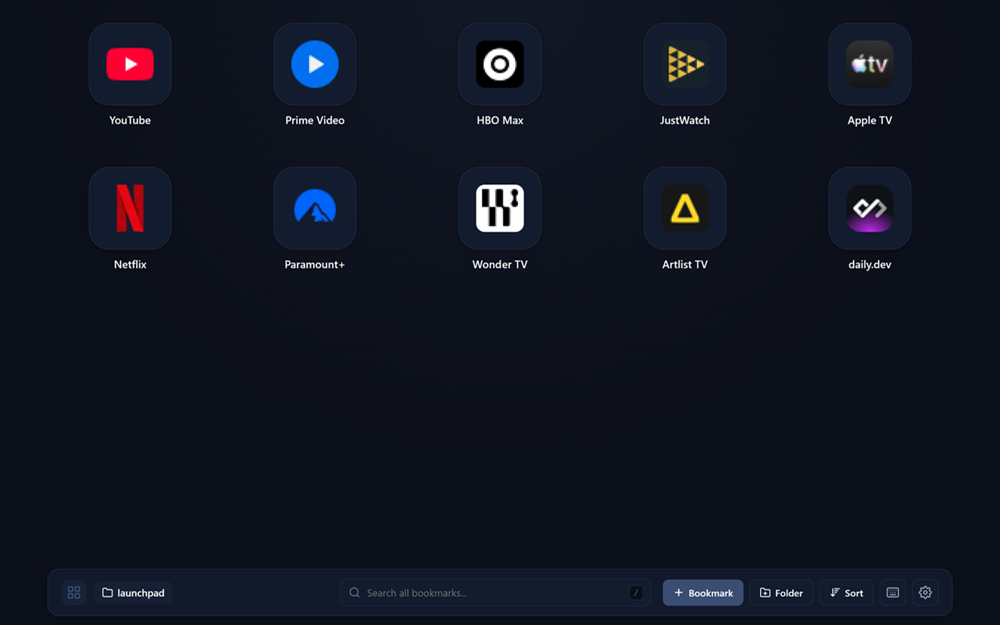

Pick Your Own Home Folder
Choose any bookmark folder in Chrome to act as your home screen. Click into subfolders whenever you need to and hop back up using the breadcrumb bar.
Replace Chrome’s cluttered New Tab page with a calm, visual launchpad powered by your own bookmarks. Browse folders, search in an instant, and organize with drag and drop.

Designed to feel effortless, personal, and fast—without getting in your way.
Choose any bookmark folder in Chrome to act as your home screen. Click into subfolders whenever you need to and hop back up using the breadcrumb bar.
Press / and start typing to search across all your bookmarks and folders at once—even if they live outside your main launchpad folder.
Rearrange links by dragging them, or drag a selection box around multiple items to open them together, move them into a folder, or group them into a brand-new folder.
Switch between App Icon grid, Comfortable cards, Compact pills, or a simple List. Choose from 5 icon sizes, Dark or Light themes, and your favorite accent color.
Navigate tiles with arrow keys, press ? anytime to view shortcuts, or sort any folder alphabetically, by date added, or by most recently opened.
No sign-ups, no tracking, and no external servers. Launchpad works directly with Chrome’s built-in bookmarks right on your computer.